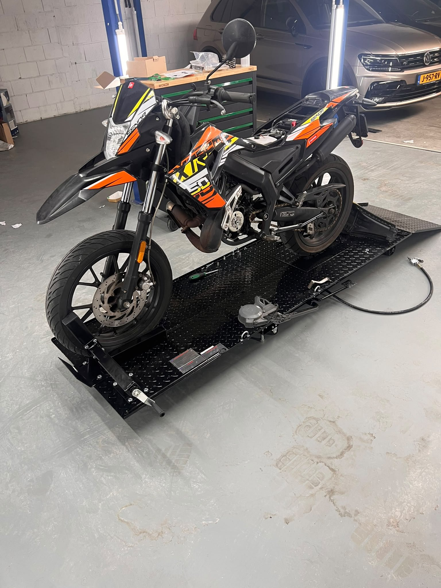
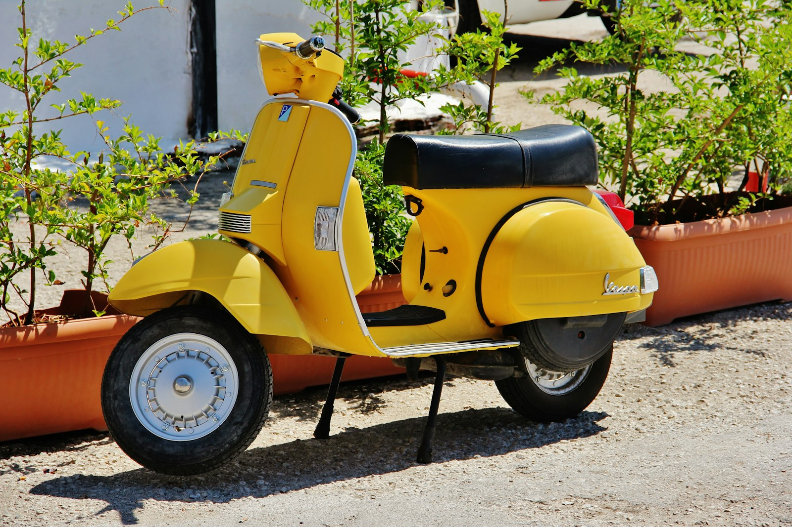

Onderhoud · reparatie · Drechtsteden
Scooter of brommer die aandacht nodig heeft.
Joep doet onderhoud en reparatie van brommers en scooters in de Drechtsteden. Geen loket, geen contactformulier: app hem.
WhatsApp Joep · 06 19778406 Wat Joep doet
Alleen WhatsApp: 06 19778406 · +31 6 19778406
Scooter
Brommer en scooter.
Eén sfeerbeeld van een scooter. Stockfoto — geen foto van Joep, geen voorraad.

Werk
Onderhoud en reparatie.
Werkplaats-werk voor brommer en scooter. Geen prijslijst op deze site — beschrijf wat er speelt, dan kijken we wat nodig is.
-
Onderhoud
Periodieke check, afstelling, slijtage bekijken. Bedoeld om je brommer of scooter soepel te houden.
-
Reparatie
Start niet, trekt slecht, vreemd geluid, lekke band, elektrische of mechanische klachten. Beschrijf het, dan plannen we het.
-
Klaarzetten voor keuring
Hulp bij het op orde krijgen van je voertuig voor een keuring. Dit is geen officiële keuringsinstantie en geen certificaat — wel praktisch werk zodat je voorbereid bent.
Drechtsteden
Dichtbij, in de regio.
Gericht op de Drechtsteden. Twijfel je of het uitkomt? App even.
- Dordrecht
- Zwijndrecht
- Papendrecht
- Hendrik-Ido-Ambacht
- Alblasserdam
- Sliedrecht
Ook in de buurt van deze kernen is vaak mogelijk.
Monteur
Joep.
Joep doet brommer- en scooterwerk voor mensen in de Drechtsteden. Kort: je belt geen callcenter, je appt de man die het werk doet.
Contact
Alleen WhatsApp.
Geen e-mail, geen contactformulier, geen adres op deze site.
06 19778406
Opent WhatsApp naar +31 6 19778406